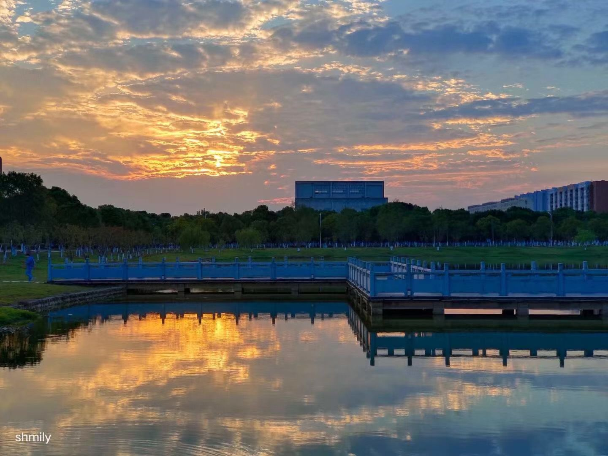
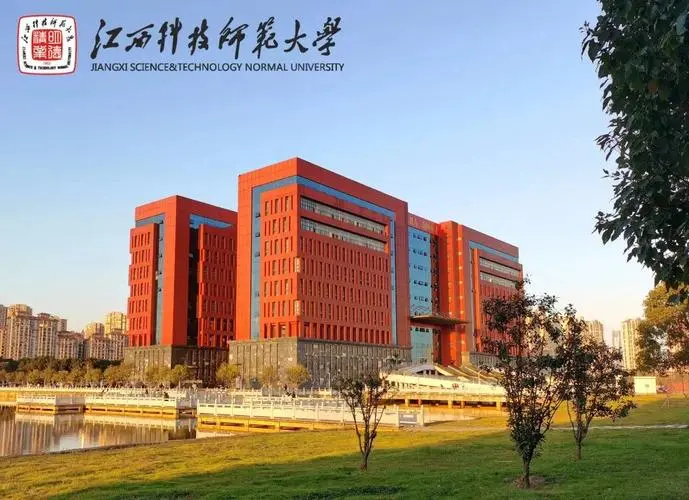

词文分享
1.盛年不重来，一日难再晨。及时宜自勉，岁月不待人。——陶渊明
2.千里之行，始于足下。——老子
3.少年易学老难成，一寸光阴不可轻。——朱熹
4.敏而好学，不耻下问。——孔子
词文分享
5.海内存知已，天涯若比邻。——王勃
6.莫愁前路无知已，天下谁人不识君。——高适
7.人生贵相知，何用金与钱。——李白
8.天生我材必有用。——李白
词文分享
9.世上唯一不能复制的是时间,唯一不能重演的是人生 ,趁有生之年,努力折腾吧。
10.凡事有因必有过,不同的选择,造就不同人生,如果选择了,便不顾风雨兼程,去努力, 去奔跑。
11.如果找不到坚持下去的理由,那就找一个重新开始的理由。生命太短,没有时间留给遗憾,若不是终点，请微笑一直向前。
12.与其指望每次失落时会有正能量的人出现温暖你,不如指望自己变成一个正能量的人。
个人网页